Koddiz
Making friends in Korea can be tough, especially for newcomers. Korddiz connects Koreans and foreigners through group activities and cultural experiences.
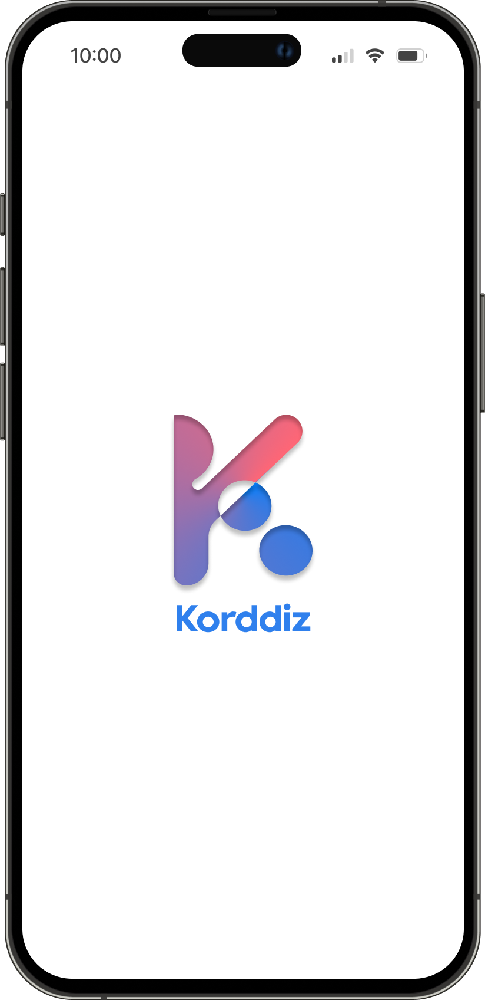
Bridging Cultures,
Building Friendships
Summary
Making friends in Korea can be tough, especially for newcomers. Korddiz connects Koreans and foreigners through group activities and cultural experiences. Whether you're a traveler or a local, Korddiz provides a safe space for cross-cultural friendships.
With Mission Events to boost engagement and a social media-style feed for updates, Korddiz makes it easy to connect. Plus, our ID verification system ensures a secure community.
My Role
UI/UX Designer
- - Product Design
- - Interaction Design
- - User Research
- - Visual Design
Team
4 members
- 1 Project Manager
- 1 Front-end Developer
- 1 Back-end Developer
- 1 Designer
Timeline
6-month Side Project
Tools
Figma
- - Jira
- - Notion
- - Google Workplace
- - Zoom
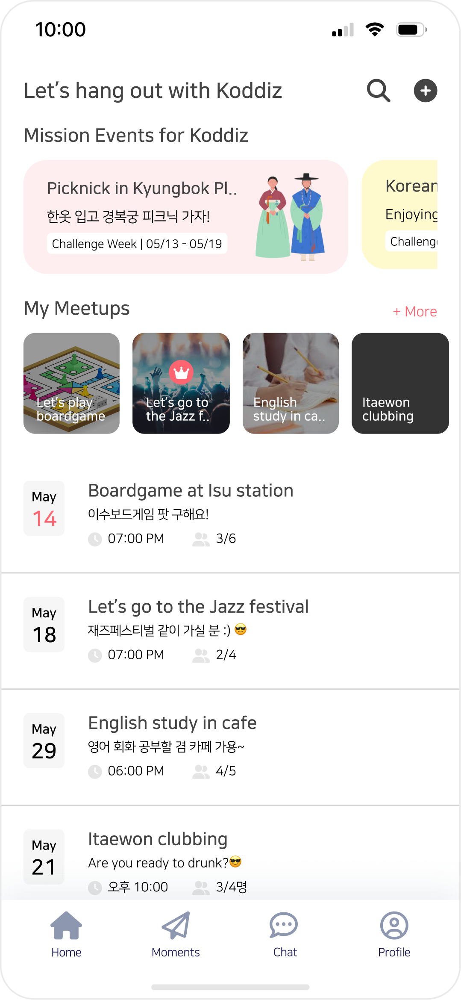
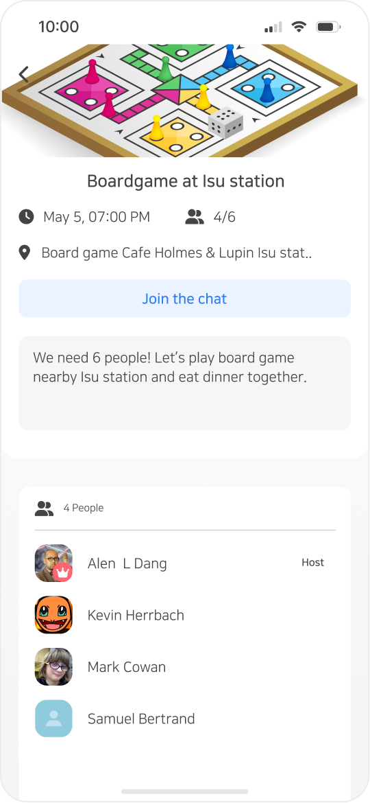
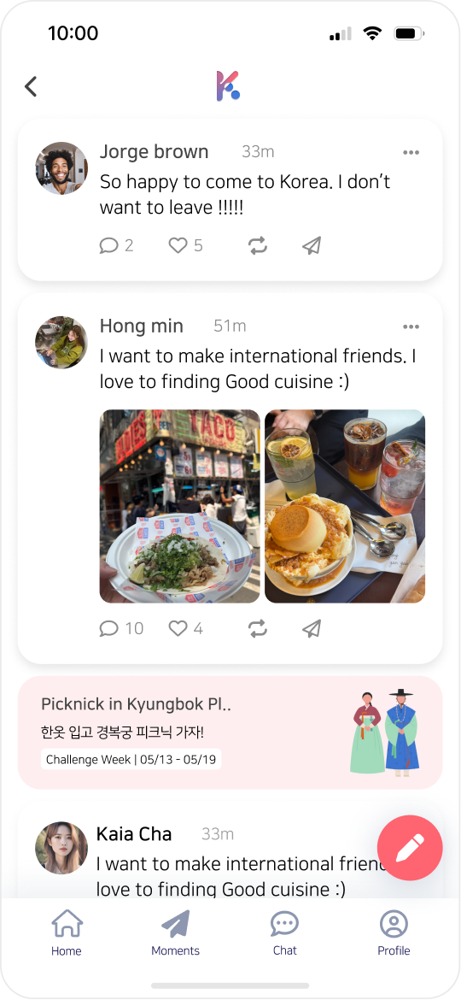
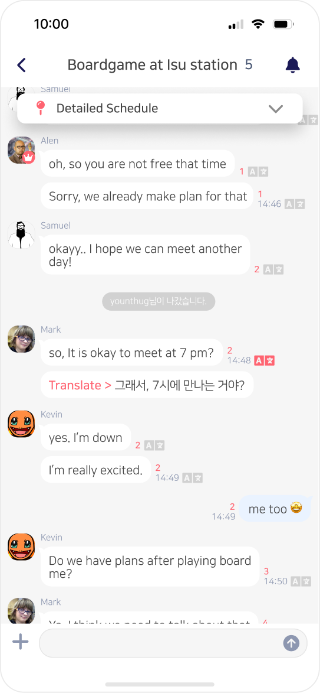
Simple User Flow
Project Goal
Designing a secure and intuitive platform that fosters meaningful cross-cultural connections
Pain Point
Pain Point 01
Lack of Natural Social Integration
Solution 01
Offer diverse social gatherings and mission-based events
Pain Point 02
Language barriers and lack of local information hinder social engagement
Solution 02
Provide a social media-style feed and real-time translation chat
Pain Point 03
Safety concerns and trust issues hinder meaningful connections.
Solution 03
Implement an ID verification system to build a secure and trustworthy ground
Painpoint 01
Lack of Natural Social Integration
Koreans want to meet foreigners but struggle to start,
while foreigners rely on SNS and communities, facing language barriers in accessing local information.
Q1. I want to make foreign or Korean friends, but I don't know where to start.
"Strongly Agree"
[Foreigner]

40%
[Korean]

75%
Q2. What methods have you used to interact with foreigners or Koreans?
Foreigner
Korean
Q3. Existing meetup and dating apps feel unnatural and overwhelming for making friends.
"Strongly + Somewhat agree"
[Foreigner]

70%
[Korean]

80%
Koreans and foreigners approach social interactions differently leading to difficulties in forming lasting connections.
Research
Existing platforms hinder lasting connections
between foreigners and Koreans.
Mission
Meeting a foreign friend at least twice within 2 weeks (multiple attempts allowed).
A. Dating App
5 foreigner per group · different purpose (Only Dating)
B. Language exchange App
5 Korean per group
C. SNS – Language exchange Party
5 Korean per group
Result
26% success rate – Only 4 out of 15 participants succeeded.
One-time meetings and mismatched expectations block natural friendships.
Solution 01
Offer diverse social gatherings and mission-based events
Provide structured social gatherings and mission-based activities to create shared experiences and encourage long-term engagement
Main page
- Users can easily browse recommended and interest-based meetups.
- Mission events offer themed groups that promote natural and comfortable interactions.
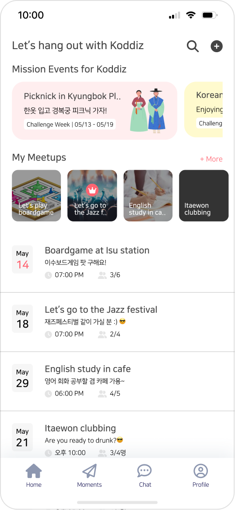
Creating Mission page
- Users can create meetups by setting basic details, with auto or custom images. Submitted meetups are open for others to join.
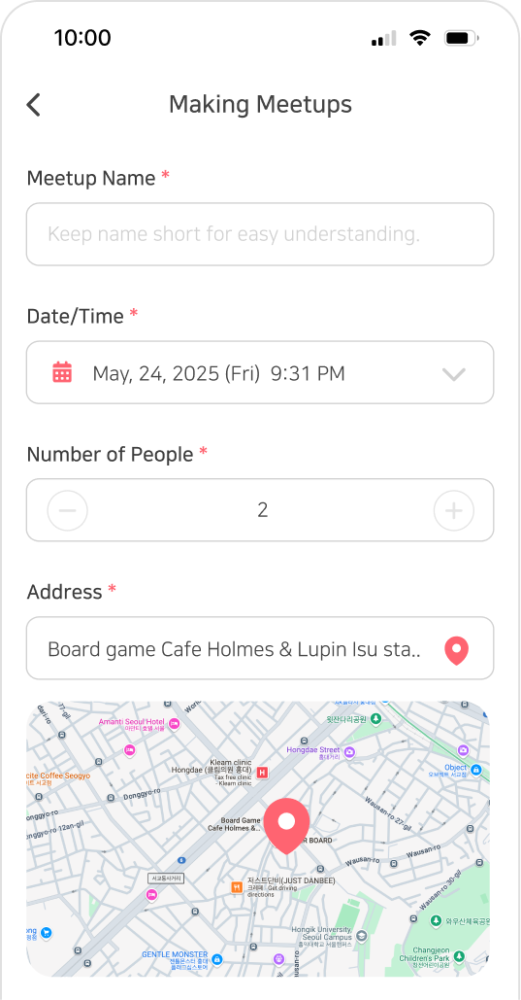
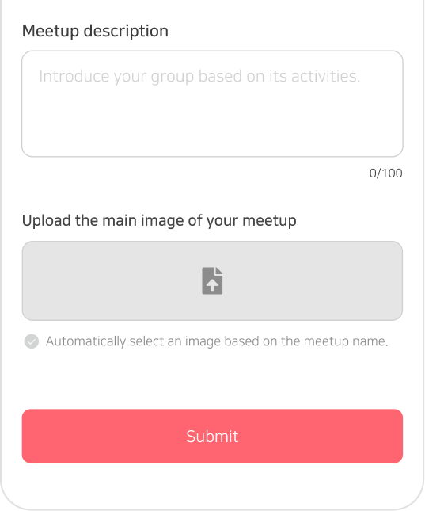
Creating Mission page
- Users can view event details before joining.
- The "Join the chat" feature lets them enter the chatroom to connect in advance.
- Real-time updates keep everyone informed of changes.
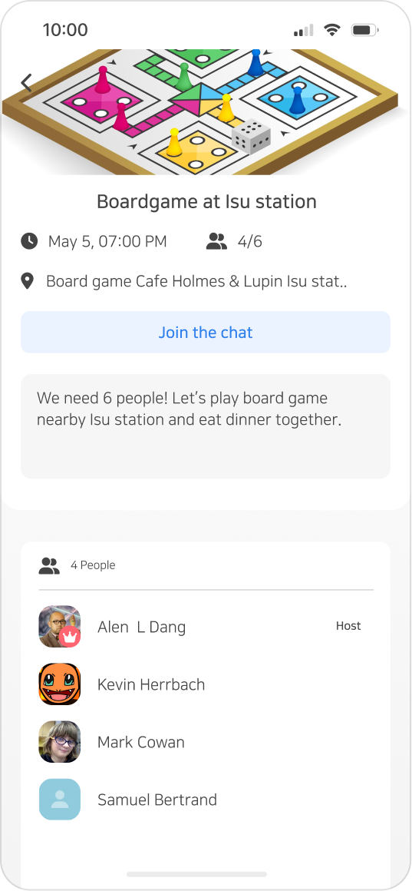
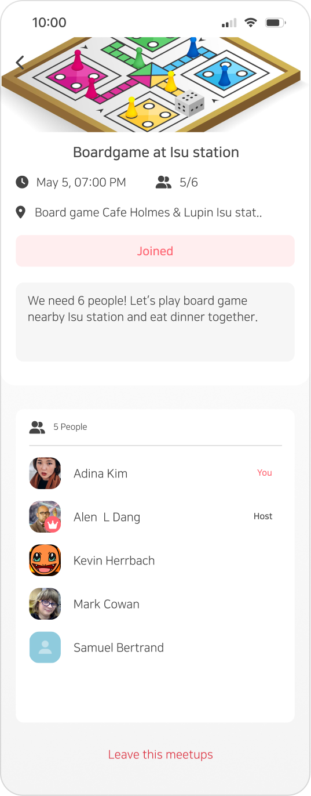
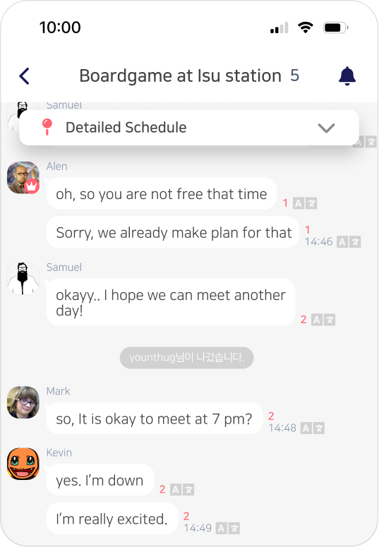
Painpoint 02
Language barriers and lack of local information hinder social engagement
Foreigners struggle with finding reliable local information, while Koreans often feel hesitant about engaging in English conversations
Difficulty accessing information & networking for foreigners
Rising number of foreign tourists in Korea
Source: Korea Immigration Data
Challenges of living in Korea
Source: Korea Immigration Data
Difficulties using Korean apps
No Language support
Unreliable ad-based reviews & blogs
Complex verification
Source: Reddit /Korea
Maria Carson who live in Korea for 2 years
I thought adapting to Korea would be easy with support programs and apps, but in reality, important information for foreigners is scattered. Sometimes I had to redo documents or cancel plans due to missing information, and I didn't even know which website to check.
Koreans' fear of speaking English
Q1. Burdened by language barriers

70%
Q2. Avoid interaction due to English difficulty
Yes
70%
Q3. Reducing discomfort when meeting foreigners
What do they need?
- ✔ A space for foreigners to explore Korean culture & local info
- ✔ A comfortable environment for Koreans to interact with foreigners
- ✔ A chance to build long-term communities, not just one-time meetups
Solution 02
Provide a social media-style feed and a Real-Time Translation Chat
Korddiz provides a social feed where users can share daily moments, local spots, and activities, making cross-cultural interactions more natural.
Moments Feed
- Users can post about their daily lives, favorite restaurants, and fun activities to connect with others.
- The feed encourages meetup participation by displaying general and mission meetups.
- Clicking on text in another language translates it into your preferred language.
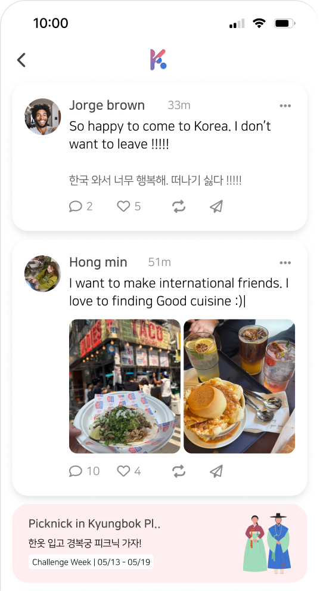
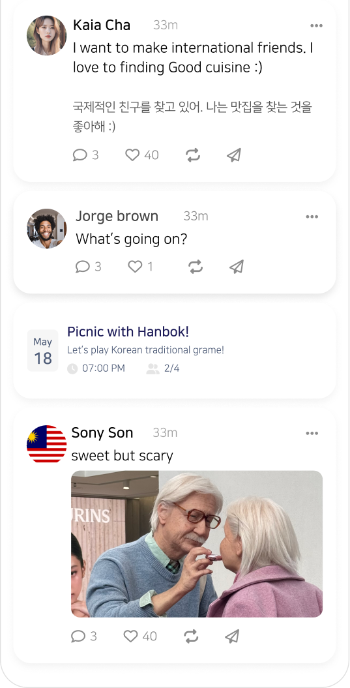
Moments Reply Feed
- Users can reply to posts, ask questions, and share thoughts to create meaningful conversations.
- Users can compose new posts by typing text and uploading images.
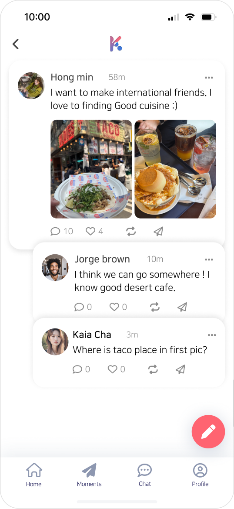
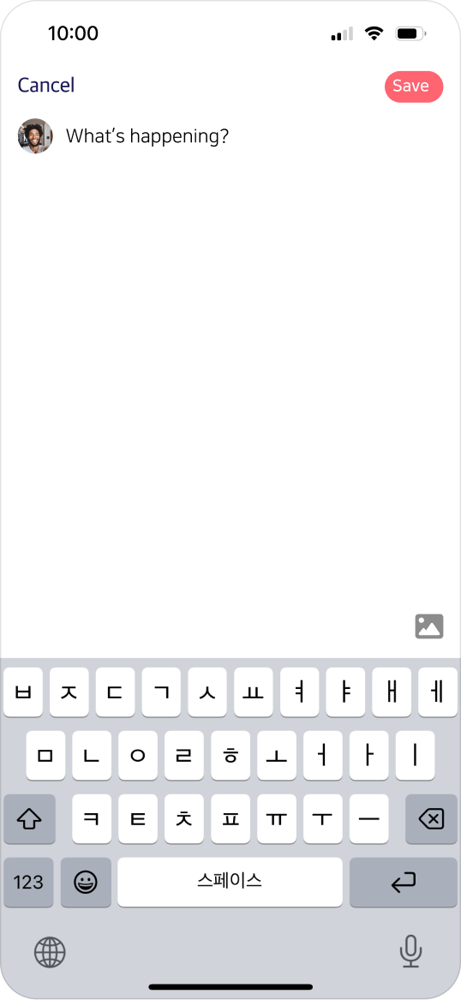
Chat Home Screen
- Users can view both meetup group chats and personal chats in one place.
- Swiping up filters the view to show only private conversations for better accessibility.
- Instantly translate messages for smooth cross-language communication.
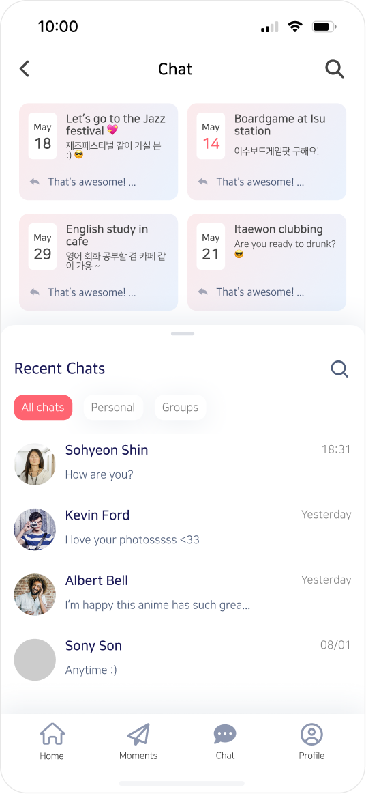
Event Schedule Updates
Any changes in the meetup details are highlighted at the top, making it easy for participants to stay informed.
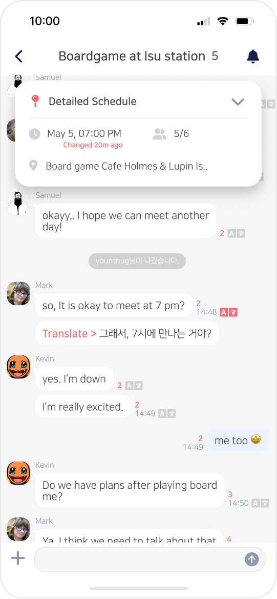
Profiles
Korddiz profiles showcase user identity, posts, and meetup participation, making interactions more engaging.
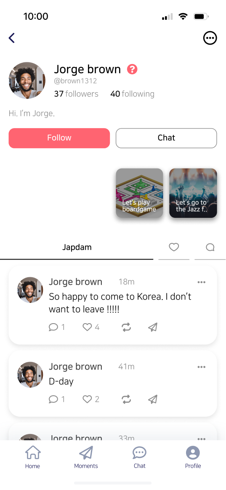
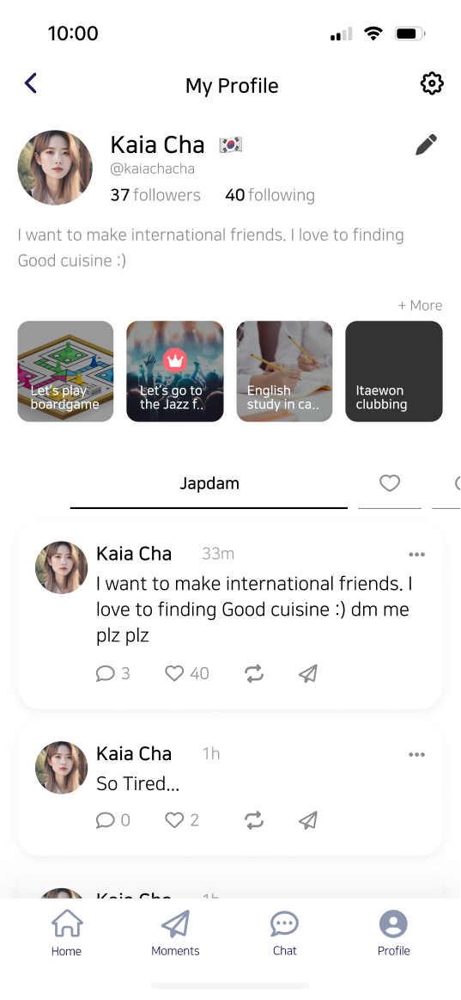
Painpoint 03
Safety concerns and trust issues hinder meaningful connections.
Despite the growing interest in social connections, safety concerns and trust issues make people hesitant to engage in online meetups. Addressing these fears is crucial for fostering a secure and reliable platform for meaningful interactions.
Rising Global Crimes via Social Media
Social media investment fraud losses in 2023
Source: FBI
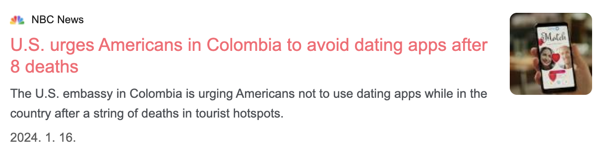
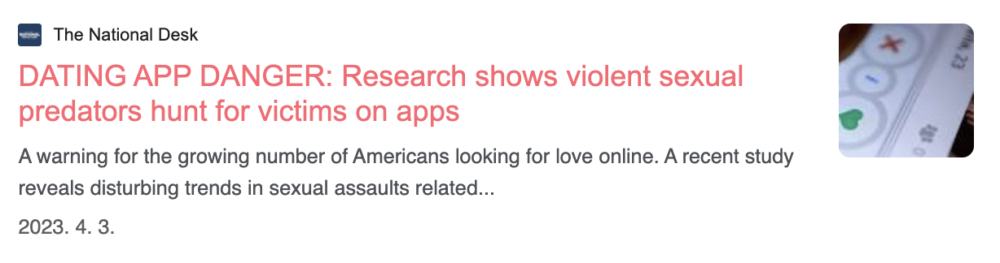
Desire to Meet, But Fear of Online Risks
Q1. Have you used
a meeting app?


Yes
Q2. Would you consider using one?

Yes
Q3. Biggest concern?
49.5%
Risk of being exposed to crime
Fraud and safety risks are increasing,
making ID verification essential for secure interactions.
Users want to connect but fear crime.
A verified system can ease concerns.
Solution 03
Verification for a Safe and Trustworthy Community
Korddiz ensures a secure and reliable user experience by implementing ID verification at key interaction points.
When ID Verification is Required
1. Before joining a meetup for the first time
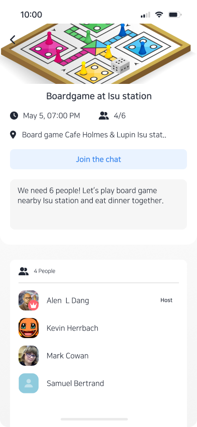
or
2. Before sending the first message to someone
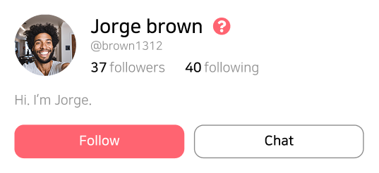
ID Verification Home Screen
Users verify their identity by entering details, selecting an ID type, and uploading a document. Once verified, they can join meetups, chat, and engage in the community.
OCR ID Scanning Process
- Users scan their ID through Optical Character Recognition (OCR) for quick and accurate processing.
- The system automatically detects and verifies ID details to prevent fraud and ensure authenticity.
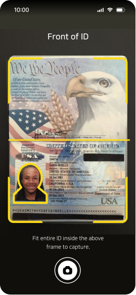
Verified Users
- Users must use their real names
- A country flag icon appears next to the user's name, indicating that their identity has been authenticated.
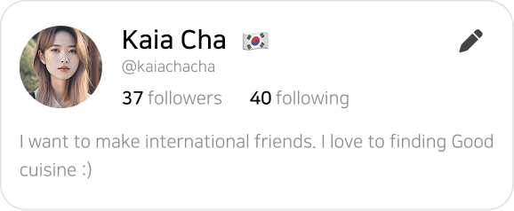
Unverified Users
- A red question mark (?) icon appears next to the user's name, signaling that ID verification is pending.
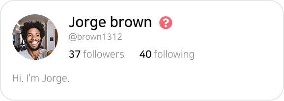
Design Guide
NAMING & LOGO
Korddiz combines Korea and Buddies,
representing a space where people can easily make friends in Korea.
The logo is designed with the letter 'K', symbolizing a greeting person, and incorporates the circular shape from the Korean flag.
Korddiz
Korddiz
Korddiz
TYPO
NanumSquare
나눔 스퀘어
Regular
Bold
COLOR
Basic
White
#ffffff
rgb(255, 255, 255)
Light
#F6F6F6
rgb(246, 246, 246)
LightGray
#E5E5E5
rgb(229, 229, 229)
Gray
#D1D1D1
rgb(209, 209, 209)
Blue
#8D97B0
rgb(141, 151, 176)
Dark
#444444
rgb(68, 68, 68)
Highlight
MainRed
#FF6471
rgb(255, 100, 113)
MainBlue
#2F80ED
rgb(47, 128, 237)
LightRed
#FFEEEF
rgb(255, 238, 239)
LightBlue
#EAF3FF
rgb(234, 243, 255)
LightYellow
#FFFACE
rgb(255, 250, 206)
Design Component
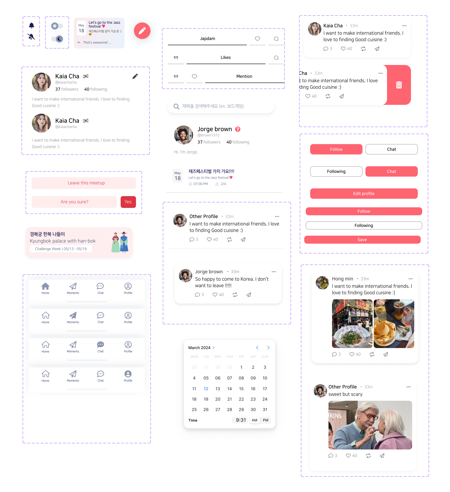